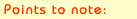
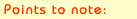

|
 What
is NoteOP ? What
is NoteOP ?
NoteOP (the Notebook Operator) allows users who are identified with
NickOP to send short notes to each other. If the user is not online,
he will be notified of new notes when he returns.
NoteOP is run by the ASD (AustNet Services Department), a group
of volunteers who devote their time to assisting users with services.
How
do I send someone a note?
Use this syntax:
 /msg
NoteOP send [nickname] note text /msg
NoteOP send [nickname] note text
or to send to several people at once:
/msg
NoteOP send [nickname],[nickname] note text
How
do I check my own notes?
Usually you will be alerted of new notes when you identify with
NickOP or mark yourself back after being away. However to see if
you have new notes and whom they are from type:
/msg
NoteOP list
The notes are listed by number and you will need this number to
read them. If you are in the habit of not deleting notes you may
prefer
/msg
NoteOP list new
which lists only new notes.
How
do I read a note?
Using the note number from the previous step type:
/msg
NoteOP read [number]
or to read multiple notes use:
/msg
NoteOP read [number],[number],[number]
and to read all your notes type:
/msg
NoteOP read all
How
do I delete a note when I'm done?
First use:
/msg
NoteOP del number]
to mark it as Deleted. Then type:
/msg
NoteOP purge
to permanently erase all Deleted notes. To delete multiple notes
at once type
/msg
NoteOP del [number],[number],[number]
and as usual to delete all notes type:
/msg
NoteOP del all
How
do I send to users with access on a certain channel?
Use the command:
/msg
NoteOP send [#channel] note text
to send to everyone,
or the more advanced syntaxes:
/msg
NoteOP send [#channel] >[access] note text
and
/msg
NoteOP send [#channel] <[access] note text
to indicate which levels of users should receive the note.
How
do I block notes from a certain source?
Use the block instruction if you are being annoyed by a person or
channel from whom you no longer wish to receive notes. If you are
being flooded with notes, tell #asd.
To block a nickname:
/msg
NoteOP block add [nickname]
or a hostmask:
/msg
NoteOP block add [*@*.isp.net.au]
or a channel:
/msg
NoteOP block add [#*channel*]
To list the blocks you have set:
/msg
NoteOP block list
and to remove a block:
/msg
NoteOP block del [block]
Why
do I have a note I can't delete?
Occasionally (usually as a result of linking nicknames through NickOP,
or adding a new host to your nickname) you will receive an undeletable
note. Allow it to expire by itself, which usually takes one week.
Why
is my notebox full?
Registered nicknames have NoteOp limits and quotas in place. These
limits are designed to minimise the abuse of AustNet resources and
to protect you from NoteOp resource flooding. NoteOp limits increase
over time, depending on the age of your nickname.

For more help on NoteOp, ask online in #asd or contact services@austnet.org.
|

 |
  
Why
do my notes renumber ? Yesterday my note from Freddy was note 10,
now it's note 8?
Noteboxes have a limit. After a week or so, old notes delete themselves
so that the notebox will not fill up as fast if you don't delete
the notes. The older notes are deleted (the ones with lower numbers)
and all the rest of the numbers "shuffle" downwards. Before
you delete notes you should always do a /msg
noteop list to make sure you have the right numbers.
What are the limits of my Notebox ?
NoteOP limits increase over time, depending on the age of the registered
nickname receiving the notes. The maximum size of a notefile is
150 notes at any given time.
1st/2nd day - 5 notes
3rd/4th day - 10 notes
5th day - 15 notes
6th day - 20 notes
1st week - 25 notes
2nd week - 50 notes
3rd week - 75 notes
4th week - 100 notes
5th week+ - 150 notes
Remember at any time you can delete notes and purge
to make more space in your notebox.
|